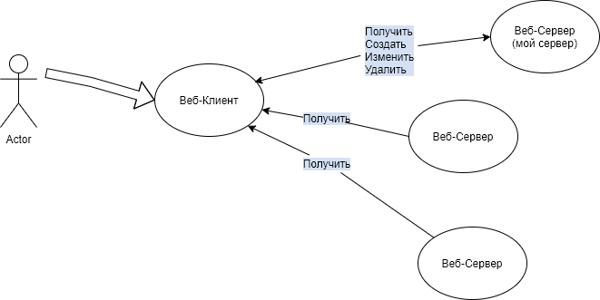

<div class="container">
  <div class="body">
    <div class="welcome mat-h1">
      <h1>Добро пожаловать</h1>
    </div>
    <div class="about">
      <div>
        <h2 class="mat-h2 c-2">CMS {{ company_name }}:</h2>

        <div class="c-1 mat-h3 c-3">
          -это Интернет-магазин или Интернет-ветрина всего за несколько часов
          <br />
          -это Готовое решение для старта вашего онлайн бизнеса на
          предоставленом шаблоне<br />
          -это отдельный выделенный VPS сервер под ваш шаблон заданной
          конфигурации <br />
          -это администрирование и сопровождение вашего ресурса
        </div>
      </div>
    </div>
    <div class="c-1">
      <h2 class="mat-h2 c-2">Hаши преимущества :</h2>
      <mat-accordion>
        <mat-expansion-panel>
          <mat-expansion-panel-header>
            <mat-panel-title> веб-хостинг </mat-panel-title>
            <mat-panel-description> Размещение сайта </mat-panel-description>

            <mat-divider></mat-divider>
          </mat-expansion-panel-header>
          <p class="mat-h4">Вы получаете сайт развернутый на отдельном VPS</p>

          <p class="mat-body-1">
            <span class="mat-h4"> VPS(виртуальный приватный сервер)</span> -это
            среднее решение между общим(shared) веб-хостингом и выделенным
            сервером.
          </p>
          <p class="mat-body-1">
            <span class="mat-h4"> VPS </span> - это изолированное пространство
            на сервере. VPS имеет свою собственную операционную систему (ОС),
            приложения, ресурсы и конфигурации. Все это содержится в одном
            мощном сервере. Каждый выделенныЙ сервер может иметь несколько VPS и
            общих(shared) веб-хостов. <br />
            Выделенный сервер (англ. dedicated server) — вид хостинга, <br />
            при котором клиенту целиком предоставляется отдельная физическая
            машина (в противоположность виртуальному хостингу).
          </p>
          <p></p>
          <p class="mat-body-1">
            Чтобы понять, нужен ли конкретному сайту или сайтам VPS/VDS-хостинг
            нужно ответить на один простой вопрос.<br />
            <br />
            Насколько успех вашего дела зависит от стабильного присутствия в
            интернете?<br />
            -Если зависимость высока,<br />
            лучше не надеяться на стандартные предложения провайдеров, а взять
            размещение в сети под полный контроль. <br />
            виртуальные серверы-«соседи» по хост-машине работают изолированно и
            не «перетягивают» друг у друга ресурсы.
            <br />

            В отличие от веб-хостинга, на VPS сайт находится внутри «приватного»
            блока с гарантированным набором ресурсов (ядра процессора, место на
            диске, ОЗУ).br Место на сервере не надо делить с «соседями»,
            некоторые из которых могут оказаться далеко не законопослушными
            пользователями.
            <br />
            <br />
            -Когда посещаемость достигает 10-15 тысяч человек в сутки, <br />
            переход на виртуальный сервер становится Обязательным в развитии
            интернет-ресурса. - отдельные IP-адреса. <br />
            Резервация за пользователем VDS выделенного IP с неизменным адресом
            положительно влияет и на уровень безопасности, <br />
            и на ранжирование сайта поисковиками <br />
            - Контейнеризация при хостинге на виртуальном сервере позволяет
            поддерживать оптимальную производительность, даже при резко
            возросших нагрузках, характерных, например, для сезонозависимого
            бизнеса.
          </p>

          <div>firs mobaile</div>
        </mat-expansion-panel>
        <mat-expansion-panel>
          <mat-expansion-panel-header>
            <mat-panel-title> Сначала мобильный </mat-panel-title>

            <mat-panel-description>
              подход к разработке сайта
            </mat-panel-description>
          </mat-expansion-panel-header>

          <p class="mat-body-1">
            Мобильными устройствами пользуются все и всегда: для просмотра
            соцсетей, для общения в мессенджерах, для онлайн-покупок, для
            совершения платежей. Конечно, есть доля трафика, где десктоп никогда
            не сдаст своих позиций (допустим, просмотр фильмов), а в остальном
            мобильный интернет рулит! Google добавил ему популярности, когда
            объявил о запуске мобильного индекса. Хотя изначально все поисковики
            работали по принципу «десктоп first». Поговорим о mobile first: что
            важно знать об особенностях такого принципа разработки?
            <br />
          </p>
          <h4 class="mat-h4">О ЧЕМ РЕЧЬ</h4>
          <p class="mat-body-1">
            Со смартфона сразу заметно, что все сайты разные: одни загружаются в
            два счета и корректно, другие быстро, но коряво, третьи не грузятся
            совсем. Разница в скорости наблюдается даже при примерно равном
            количестве контента.
          </p>
          <p class="mat-body-1">
            Дело в том, что скорость зависит не только от внешних условий
            (хостинг, качество интернета), но и от внутренних, то есть от
            построения самой страницы. Когда она разрабатывается под не особо
            мощные устройства, которыми пользуется большинство, то и загрузка
            проходит гладко. Иная ситуация, когда страницы, созданные под
            десктоп, попадают на экраны мобильных. Многие считают, что проблему
            решает адаптивный дизайн. Это не совсем верно. Для понимания следует
            выделить отличия между адаптивной версткой и собственно mobile
            first.
          </p>
          <h5 class="mat-5">АДАПТИВНОСТЬ ≠ MOBILE FIRST</h5>
          <p>
            Адаптивный дизайн – это масштабирование под размер экрана имеющихся
            элементов при сохранении размера файлов. Мобильная версия сайта
            предполагает не только корректное отображение страниц на экранах
            небольшой величины, но и снижение веса файлов. Это необходимо для
            увеличения скорости загрузки. В основе подхода лежит
            преимущественная ориентация сайта на мобильные устройства.
          </p>
          <p class="mat-body-1">
            Mobile first не соревнуется с адаптивным дизайном. Можно сказать,
            что они дополняют друг друга. Адаптивная верстка двигается от
            большего (экран десктопа) и приходит к уменьшению (экран
            мобильного).
          </p>
          <p class="mat-body-1">
            Если пользователь заходит на такой ресурс со смартфона, то браузер
            обрабатывает информацию, отсекая лишнее. Но многие сайты так сложны
            и перегружены различным контентом, что не на каждом устройстве
            отображаются одинаково хорошо. Когда работает mobile first, сначала
            грузится основная версия. Она всегда совместима с любыми
            платформами. Далее, дополнительно, в зависимости от платформы или
            браузера, подгружаются новые опции и стили. Таким путем версия
            всегда отображается корректно.
          </p>
        </mat-expansion-panel>

        <mat-expansion-panel>
          <mat-expansion-panel-header>
            <mat-panel-title> Дружественный интерфейс </mat-panel-title>
            <mat-panel-description> Минимум кнопок </mat-panel-description>
          </mat-expansion-panel-header>
          <p></p>
          <p class="mat-body-1">
            это интерфейс, основанный на таких правилах (принципах), которые
            позволяют пользователю освоить работу с программой за минимальное
            время, и требующий от него (пользователя) минимальных усилий при
            решении его (пользователя) задач.
          </p>
        </mat-expansion-panel>
        <mat-expansion-panel>
          <mat-expansion-panel-header>
            <mat-panel-title>
              Управление содержанем сайта с мобильного телефона</mat-panel-title
            >
          </mat-expansion-panel-header>
          <p class="mat-body-1">
            - Возможность управления сайтом в любой момент времени.
          </p>
          <p class="mat-body-1">
            - Мобильность. Все средства управления и контроля помещаются в
            кармане джинсов.
          </p>
        </mat-expansion-panel>
        <mat-expansion-panel>
          <mat-expansion-panel-header>
            <mat-panel-title> Взаимодействие с партнерами </mat-panel-title>
            <mat-panel-description> обмен данными </mat-panel-description>
          </mat-expansion-panel-header>
          <p class="mat-body-1">
            Допустим ваш основной профиль это торголя.У вас есть несколько
            Поставщиков. <br />
          </p>
          <p class="mat-body-1">
            - Вы можете взять у них каталог продукции на каком либо носитиле-
            бумажном , цифровом и внести в свою базу данных . <br />
            Используя её - вывести информащию клиету. <br />
          </p>
          <p class="mat-body-1">
            -Либо ,если у поставщика релазиован web-сервис его каталога
            продукции.
            <br />
            Вы можете , зная адресс и структуру , прочиталь данные с его сайта.
            <br />
            Преобразовать их в нужный вид ,например - изменить цену,галочка -под
            заказ.<br />
            - вывести информащию клиету.
          </p>
          <div style="display: inline-flex">
            
          </div>
          <p class="mat-body-1">
            Возможность создать замкнутую систему в которой товар на сайте и в
            реальном времени максимально сближены.
          </p>
        </mat-expansion-panel>
      </mat-accordion>
    </div>
    <div class="c-1">
      <h2 class="mat-h2 c-2">Справка :</h2>
      <mat-accordion>
        <mat-expansion-panel>
          <mat-expansion-panel-header>
            <mat-panel-title> Доменное имя сайта </mat-panel-title>
            <mat-panel-description> Ваш Актив </mat-panel-description>
          </mat-expansion-panel-header>
          <h4 class="mat-h4">Что такое доменное имя сайта?</h4>
          <p class="mat-body-1">
            Доменное имя сайта — это имя, которое вы указываете в поисковой
            строке браузера, например,www.my1site.ru или my1site.ru. <br />
            Доменным именем первого уровня в данной записи является окончание
            .ru,
            <br />
            второй уровень — это предыдущее название web-сайта: my1site. <br />
            Доменное имя третьего уровня, которое предлагет бесплатный хостинг
            может выглядить, к примеру,так: photo.my1site.ru или s.x-01.ru
            <br />
            Третьим уровнем доменного имени в данном случае является имя,
            которое предшествует my1site.ru или x-01.ru
          </p>
          <h4 class="mat-h4">Доменное имя сегодня</h4>
          <p class="mat-body-1">
            Это не просто адрес сайта в сети Интернет. Домен как уникальный
            идентификатор компании имеет самостоятельную маркетинговую ценность
            и является, по существу, одним из важнейших нематериальных активов
            компании в сети. Доменное имя упоминается в рекламе, используется в
            адресах корпоративной почты и, как результат, прочно ассоциируется у
            потребителей с компанией в целом и ее брендом.
          </p>
          <h4 class="mat-h4">Зарегистрировать домен</h4>
          <a
            class="mat-body-1"
            href="https://www.reg.ru/domain/new/?rid=338333&utm_source=yandex:search&utm_medium=cpc&utm_term=Доменное%20имя&utm_content=none|4193488931|9050963737|premium|1&utm_campaign=domains_cpa&yclid=3241569273705167612"
            >Регистрация доменов на reg.ru(ссылка-клик для перехода)
          </a>
          <br />
          <a
            class="mat-body-1"
            href="https://www.reg.ru/support/domains/registraciya-domena/kak-zaregistrirovat-domen"
            >Как зарегистрировать доменное имя в REG.RU(ссылка-клик для
            перехода)</a
          >
          <h4 class="mat-h4">Расположение сайта и доменное имя</h4>
          <p class="mat-body-1">
            Являясь владельцем доменного имени вы можете связать его с любым
            расположением сайта.
          </p>

          <h4 class="mat-h4">Немного о рекламе</h4>
          <p class="mat-body-1">
            Допустим, компания работает в течение, например, пяти лет на рынке.
            В самом начале своего пути она сделала себе сайт, чтобы был, на
            перспективу. Разместила там базовую информацию о компании и, может
            быть, даже каталог товаров и услуг вместе с парой статей.
          </p>
          <p class="mat-body-1">
            Далее эта компания отпечатала данный сайт на визитках, коммерческих
            предложениях, вставила его в свою e-mail подпись. Да и сам почтовый
            ящик возможно завела на собственном домене.
          </p>
          <p class="mat-body-1">
            Даже если в компании работало всего 1 менеджер по продажам, за 5 лет
            он сделал тысячи контактов с потенциальными клиентами. У многих
            осталась ваша почта, визитки, кто-то сохранил или запомнил ваш сайт.
          </p>
          <h4 class="mat-h4">Поисковые системы тем временем:</h4>
          <ul class="mat-body-1">
            <li>- Присвоили вашему сайту регион;</li>
            <li>
              - проиндексировали ваш контент и определили для себя тематику
              вашего сайта;
            </li>
            <li>- стали учитывать поведенческие факторы на вашем сайте;</li>
            <li>
              - следили за количеством прямых заходов и брендового трафика;
            </li>
            <li>
              - учитывали полученные ссылки как "чистые" если их было немного, и
              они были получены естественным путем;
            </li>
            <li>- Отсчииывали историю вашего домена с нуля до наших дней.</li>
          </ul>
          <p class="mat-body-1">
            И вот, в день X компания забыла оплатить свой домен. Или отдала его
            кому-то из друзей/партнеров. Или сознательно от него отказалась,
            легкомысленно сказав себе «все равно с него ни одного звонка за пять
            лет» и вместе с этим спокойно отрезала от себя несколько сотен тысяч
            рублей. Да-да, именно столько стоят такие незначительные усилия по
            продвижению сайта. Где-то это 100-200 т.р.
          </p>
          <p class="mat-body-1">
            И самое главное чего лишает себя компания — это времени на развитие
            сайта. Потому что любой новый домен является для поисковых систем
            «подозрительным». На него наложены некоторые фильтры, такие как
            «песочница» и «молодой сайт», и даже исходя из его возраста, вам уже
            не видать серьезных позиций в поисковой выдаче в течение первого
            года, как бы вы ни старались
          </p>
        </mat-expansion-panel>
        <mat-expansion-panel>
          <mat-expansion-panel-header>
            <mat-panel-title>Почта</mat-panel-title>
            <mat-panel-description>
              логин@Доменное имя сайта
            </mat-panel-description>
          </mat-expansion-panel-header>
          <p>
            Личный ящик со своим доменом носит термин «корпоративная почта».
          </p>
          <p>Создав Корпоративную почту вы получаете :</p>
          <ul>
            <li>- Возможность создать почтовый ящик типа :</li>
            <ul>
              <li>admin@mydom.ru</li>
              <li>contact@mydom.ru — для любых вопросов;</li>
              <li>orders@mydom.ru — для вопросов по поводу заказов</li>
              <li>support@mydom.ru — для службы поддержки клиентов;</li>
              <li>name@mydom.ru — для личных адресов сотрудников.</li>
              <li>user@mydom.ru</li>
              <li>market@mydom.ru</li>
              <li>sasha@mydom.ru</li>
              <li>и тд..</li>
            </ul>
            <li>- Закрепить их за своими сотрудниками</li>
            <li>- В случае увольнения передать его другому сотруднику</li>
          </ul>
          <p>Корпоративный ящик -это показатель зрелости бизнеса.</p>
          <div *ngIf="flagMialHelp">
            <router-outlet></router-outlet>
          </div>
          <mat-action-row>
            <button mat-button color="primary" (click)="LoadMailLazy()">
              Подробней..
            </button>
          </mat-action-row>
        </mat-expansion-panel>
        <mat-expansion-panel>
          <mat-expansion-panel-header>
            <mat-panel-title>Сайт</mat-panel-title>
            <mat-panel-description> Что это ?</mat-panel-description>
          </mat-expansion-panel-header>
          <p>
            <span class="mat-body-2">Сайт</span>, или
            <span class="mat-body-2"> веб-сайт</span>, также
            <span class="mat-body-2"> веб-узел</span>, — одна или несколько
            логически связанных между собой веб-страниц; также место
            расположения контента сервера. Обычно сайт в Интернете представляет
            собой массив связанных данных, имеющий уникальный адрес и
            воспринимаемый пользователями как единое целое
          </p>
          <p class="mat-h4 _title">Как это работает</p>
          <p class="mat-body-1">
            <span class="mat-body-2">Сайт</span> - это клиент - серверное
            приложение(программа). <br />
            Оно состоит из двух частей: <br />
            <span class="mat-body-2"> Клиента</span>-вашего устройсва(компьютора
            ,планшета,телефона) с работающей на нем клиентской программой и
            <br />
            <span class="mat-body-2">Веб-Сервера</span> расположенного на этом
            же устройстве или где-то в сети (интернете).
          </p>
          <p class="mat-body-2 _title">Клиент</p>
          <p class="mat-body-1">
            <span class="mat-body-2">Клиент</span> может быть двух типов:
          </p>
          <ul class="mat-body-1">
            <li>
              <span class="mat-body-2">- Веб-клиент</span> , программа которая
              работает в веб-браузере.Например:
              <ul>
                <li>
                  <a
                    href="https://play.google.com/store/apps/details?id=com.android.chrome"
                  >
                    
                    Хром браузер(Сhrome browser)</a
                  >
                </li>
                <li>
                  <a href="https://www.opera.com/ru">
                    
                    Опера браузер(Оpera browser)
                  </a>
                </li>
                <li>
                  <a href="https://www.microsoft.com/ru-ru/edge">
                    
                    Microsoft Edge(Edge browser)</a
                  >
                </li>
                <li>
                  <a href="https://mobile.yandex.ru/apps/android/search/">
                    

                    Яндекс Приложение</a
                  >
                </li>
                <li>
                  <a href="https://www.google.com/search/about/">
                    
                    Google Приложение
                  </a>
                </li>
              </ul>
            </li>
            <li>
              <span class="mat-body-2">- Клиент</span> (Клиентское приложение) -
              программа работающая непосредственно на устройстве. Обычно вы ее
              скачиваете с
              
              Google Play под свои задачи. Она Имеет больше
              разрешений(permissions) на чтение ,запись и т.д. :
              <ul>
                <li>
                  <a
                    href="https://xn--80aaakxpne3ahl.xn--p1ai/message-for-instagram/"
                  >
                    

                    Инстаграм (Instagram)</a
                  >
                </li>
                <li>
                  <a href="https://vk.com/">
                    
                    ВКонтакте</a
                  >
                </li>
                <li>
                  <a href="https://www.whatsapp.com/">
                    
                    Whatsapp</a
                  >
                </li>
              </ul>
            </li>
          </ul>
          <p class="mat-body-2 _title">Сервер</p>
          <p class="mat-body-1">
            <span class="mat-body-2"> Веб-Сервер</span> - Всегда находится в
            ожидании запроса(Слушает какой либо порт,наример: 80). Когда к нему
            обращается клиент (
            браузер хром -строка запроса- http:\\mysite.ru:80 ) Дает Ответ в
            виде http-данных. <br />
            - это может быть:
          </p>
          <ul>
            <li>
              <p class="mat-body-1">
                <span class="mat-body-2"> Статические </span> (постоянные,
                неизменяемые) данные .Например текстовый файл,фото ,видео . Они
                уже существуют на сервере. Сервер его находит ,считывает и
                прередает.В качестве примера можно привести
                <span class="mat-body-2"> Сатический сайт </span> .Вы дома
                создаете папку (дирректорию).В ней создаете файл index.html
                <br />
                Наполняете все это содержанием ,тестируете.После этого просто
                копируете на сервер. На севере в реестре указываете путь к этой
                папке и стартовую страницу index.html(для веб-сервера nginx это
                делается в nginx.conf) <br />
                При обращение клента
                браузер хром -строка запроса- http:\\mysite.ru:80 ) сервер
                даст ответ ввиде html страницы.
              </p>
            </li>

            <li>
              <p class="mat-body-1">
                <span class="mat-body-2"> Динамические </span> данные.Это данные
                сформированные на основе запроса к серверу.Они могут быть двух
                типов:
              </p>
              <ul>
                <li class="mat-body-1">-Ввиде html страницы</li>
                <li class="mat-body-1">
                  - Ввиде набора данных определенного формата.Например:
                  сторки,массива байтов и т.д.
                </li>
              </ul>
              <p></p>
              <p class="mat-body-1">
                Когда данные возвращаются ввиде html страницы .Мы подразумеваем
                ,что это есть динамический сайт <br />
              </p>
              <div style="display: inline-flex">
                
              </div>
              <p>
                Когда данные возвращаются ввиде набора данных определенного
                формата .Мы подразумеваем , что это есть веб-сервис. <br />
                Обычно он используется для внесения изменений в html страницу
                без ее презагрузки.А также для раздачи данных другим
                Веб-клиентам.
              </p>
              <div style="display: inline-flex">
                
              </div>
              <p>
                Например ,у вас есть Каталог товаров(прайс).На основе его вы
                создали веб-сервис. Клиенткое приложение ващего поставщика может
                получить данные из этого веб-сервиса.Оно может полуять ответ на
                зарпос (показать катоалог тумбочек)(показать каталог кроватей
                )(показать тумобочку № 123)
              </p>
              <p class="mat-body-1">
                Когда мы говорим о динамичекий сайтах или веб-сервисах,то именем
                ввиду не только get (получить данные)запросы но и запросы put
                (создать что-то),post(изменить что-то),delete(удалить),т.е
                возможности создать систему управления контентом(содержанем) для
                пользователя.
              </p>
            </li>
          </ul>
        </mat-expansion-panel>
        <!------------------ start-->
        <mat-expansion-panel>
          <mat-expansion-panel-header>
            <mat-panel-title>Телефон</mat-panel-title>
            <mat-panel-description>
             8-800-***
            </mat-panel-description>
          </mat-expansion-panel-header>
          <h4>Многоканальный номер 8-800-***</h4>
         <ul>
           <li>Предоставляет клиентам возможность звонить вам бесплатно из любого региона России</li>
           <li>Принимать звонки от нескольких клиентов одновременно</li>
           <li>Распределять вызовы с последующим их приемом на мобильный номер</li>
           <li>
             настраивать голосовое приветствие
           </li>
           <li>Записывать все входящие и исходящие вызовы с номеров сотрудников</li>
         </ul>
          <p>Такой номер придает солидности компании в глазах клиента, улучшает ее имидж.</p>
               <h4>Ссылки на Операторов</h4>
               <ul id="ats" >
                 <li><a  title="АТС 2.0 от Tele2" href="https://ats2.tele2.ru/landing"><span class="ats"> АТС 2.0 от Tele2</span></a></li>
                 <li><a title=">Билайн Бизнес 8-800" href="https://krasnodar.beeline.ru/business/telephony/nomer-8-800/">Билайн Бизнес 8-800-***</a> или <a title="АТС Билайн" href="https://beeline-krasnodar.ru/virtualnaya-ats-beeline">АТС от Билайн</a> </li>
                 <li><a title="Мегафон Бизнес 8-800" href="https://8800.megafon.ru/">Мегафон Бизнес 8-800-*** </a> или <a title="ATC Мегафон" href="https://vats.megafon.ru/">ATC</a> </li>
                 <li><a title="МТС Бизнес 8-800" href="https://kuban.mts.ru/business/svyaz/besplatnyy-vyzov-8800">МТС Бизнес 8-800-***</a> или <a title="ATC MTC" href="https://krasnodar.mtsru.ru/business/vats">ATC МТС</a></li>
                 <li><a title="Ростелеком Бизнес 8-800" href="https://krasnodar.rt.ru/b2b/telephony/8800">Ростелеком Бизнес 8-800-***</a> или <a title="АТС Ростелеком" href="https://rt-internet.ru/business/vats">АТС Ростелеком</a></li>

               </ul>
               <p>Функциональность виртуалной АТС уточняйте у операторов</p>

        </mat-expansion-panel>
        <!-------------/-->
      </mat-accordion>
    </div>
  </div>
</div>
